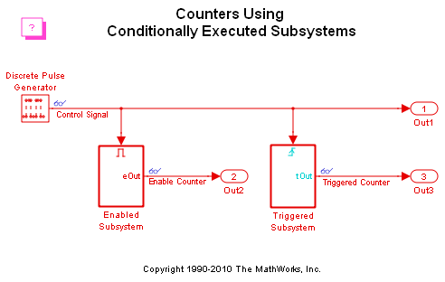
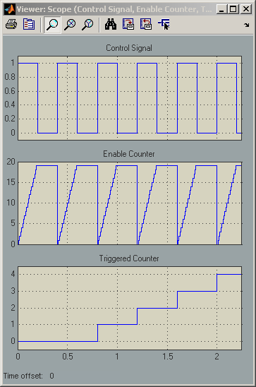

Counters Using Conditionally Executed Subsystems
This demonstration uses counter circuits to contrast the execution of blocks in enabled subsystems and triggered subsystems for the same control signal. After running the simulation, the scope shows three plots.
The first of these plots shows the control signal which is the output of the discrete pulse generator.
The second plot shows the output of the counter circuit in the enabled subsystem. The counter increments while the subsystem is enabled and then holds its output when the subsystem is disabled. The counter resets to zero when the subsystem is re-enabled because the enable port was configured to reset states when enabling.
The third plot shows the output of the counter circuit in the triggered subsystem. The counter increments every rising edge of the control signal.
The signals are shown in a Signal Viewer scope that does not require a scope block to be put into the block diagram. Instead, the "glasses" icon notation on the ports show that a Signal Viewer is attached. Double click on the glasses to make the Signal Viewer appear if it is hidden.
 